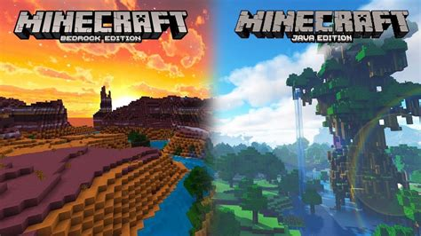

Nuevos Articulos
Nuevo DLC de Ben 10 para minecraft

Últimamente se especuló mucho sobre la implementación de un DLC al juego de minecraft, no fue...
El desafortunado desceso de Minecraft earth

Es indiscutible que Mojang, con Minecraft Earth, ha tenido muy mala suerte. Y es que su gran apuesta para 2020 era...
Java vs Bedrock, ¿que minecraft es mejor?
He perdido la cuenta de la cantidad de ocasiones en las que he escuchado esta pregunta, ¿Minecraft Java o Bedrock? ...
Trailer de Minecraft
Informacion de la pagina
Creador de blog:
Andy Omar Franco Bermúdez
Matricula: 203717
Ingenieria en desarrollo de Software
Cuatrimestre: 3 Grupo: B
Esta blog es creado como un proyecto escolar con el fin de dar noticias
acerca del videojuego "Minecraft".
Todos los articulos aqui vistos son recopilados y editados por el propietario.
En caso de alguna duda, queja o aclaracion, o ayuda relacionada
con este blog, o el videojuego "Minecraft", vaya a la parte de
contactos, y hablemos, nos gustaria saber su opinion.